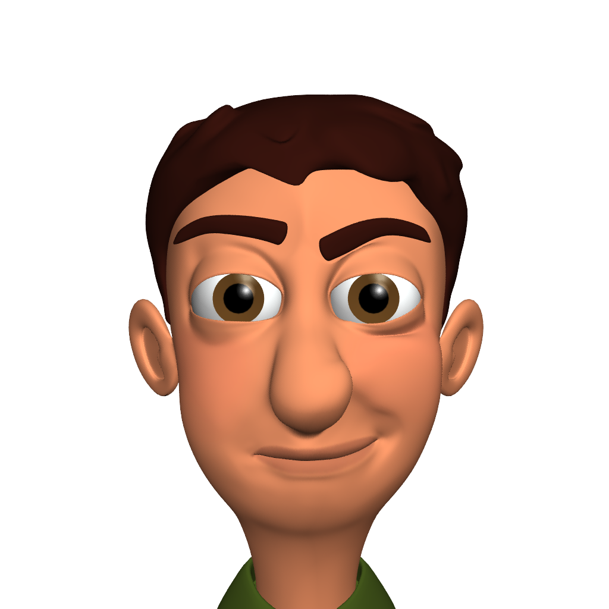

From 2013 - 2014, I worked for the University of Washington Computer Science Department's Animation Research Labs. We developed an Autodesk Maya Plugin to support facial expression animation, which I can only discuss at a high level currently.
Novice animators struggle to learn facial expression animation and often creating unreadable or uncanny-looking expressions.
I worked on an interdisciplinary team of computer scientists and artists to build a Maya plugin to help animators, where I contributed the following:
The user study and related work sections received positive feedback from reviewers.